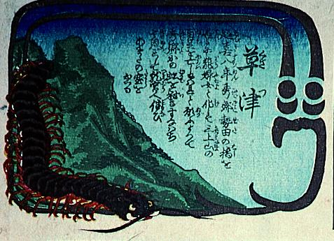

← 图鉴索引

山ほどの大きさがある百足。
著作者：歌川国芳／出典：親書誌：A5_pushkin_0013：東海道五十三対 草津；トウカイドウゴジュウサンツイクサツ／日付：2011／資源識別子：A5_pushkin_0013_0002_0000
Copyright (c)2010- International Research Center for Japanese Studies, Kyoto, Japan. All rights reserved.